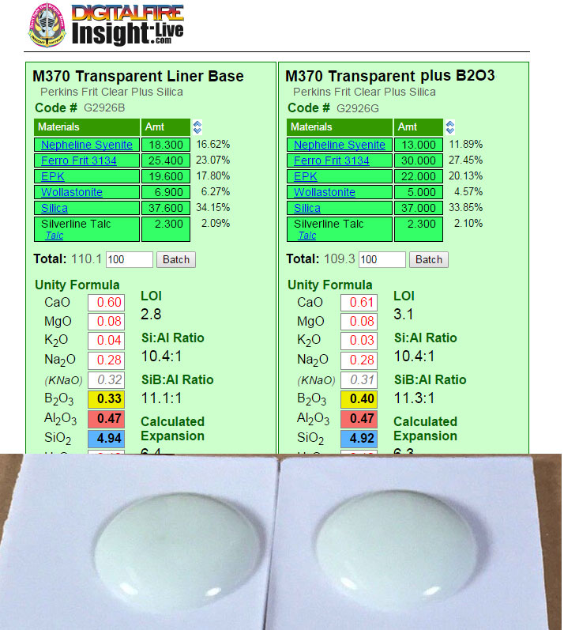
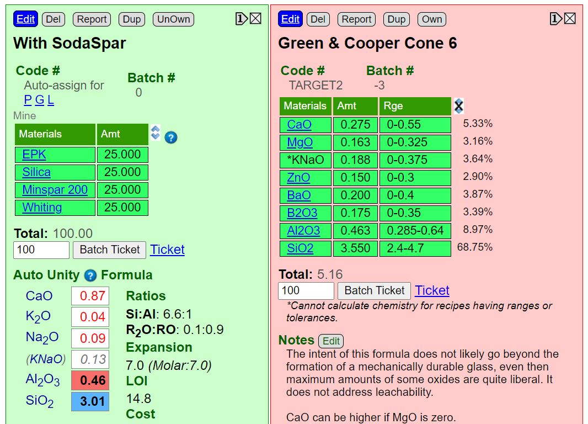

Limit Formula
A way of establishing guideline for each oxide in the chemistry for different ceramic glaze types. Understanding the roles of each oxide and the limits of this approach are a key to effectively using these guidelines.
Key phrases linking here: balanced chemistry, target formula, limit formulas, limit formula - Learn more
Details
The term 'limit formula' historically has typically referred to efforts to establish absolute ranges for mixtures of oxides that melt well at an intended temperature and are not in sufficient excess to cause defects. These formulas typically show ranges for each oxide commonly used in a specific glaze type (as opposed to the concept of a limit recipe that expresses normal material amounts expected in a given type of product).
Many prefer the term "target formula". This is because the term 'limit formula' suggests that glazes outside the ranges will not work and that ones inside are somehow safe. However, this is not the case. Melting well simply carries with it a much higher likelihood that a glaze is reasonably functional and balanced (does not have excessive amounts of any individual oxide that might lead to instability or reactivity). These limits are also dependent on the amount of B2O3 present (if more can be tolerated, then more Al2O3 and SiO2 can also be tolerated).
Specific ceramic industries have created proprietary limits for the glazes that they make (e.g. super low expansion, high abrasion resistance, resistance to bacteria growth, high elasticity, specific colors, fast fire). These limits are often closely guarded secrets and would be well outside normal the ranges shown here. A common public domain target example is crystalline glazes; they require almost no alumina, much higher than normal sodium and zinc. They also require special treatment during firing.
There is a difference between sourcing an oxide from a frit or raw material. Frits readily release their oxides to the glaze melt, giving more time for them to participate intimately in the formation of a homogeneous glaze structure (this is especially important where materials have high melting temperatures). Thus, oxides like BaO, that might potentially leach in a glaze where they are sourced from raw materials might not do so from a frit, especially when levels are relatively low.
However, we are mainly concerned with creating glazes for use on functional ware. Using the term "target formula" instead of "limit formula" suggests we are more interested in comparing a new glaze with one we already understand (have used and tested extensively). It recognizes that judging the suitability of glazes is more of a relative than absolute science. This is good.
Here is an example of a typical limit formula for cone 6 glazes.
CaO - 0-0.55
MgO - 0-0.325
KNaO - 0-0.375
ZnO - 0-0.3
BaO - 0-0.4
B2O3 - 0-0.35
Al2O3 - 0.285-0.64
SiO2 - 2.4-4.7
These values refer to comparative numbers of molecules. They are meant to be compared with a glaze whose formula has been unified (fluxes, or melters, add up to one). At cone 6, the fluxes are CaO to BaO. They balance against the Al2O3 (stabilizer) and SiO2 (glass former). The B2O3 is a low-temperature glass that also functions as a flux.
This suggests that CaO (usually from calcium carbonate or wollastonite) can be anywhere from zero to 0.55. But in actual practice, you will almost never see a glaze with zero CaO, there is almost always a significant amount (0.3 or more). In matte glazes, the CaO is very often higher than this limit.
-MgO (from talc and dolomite) is less common in than CaO or KNaO in glazes; it tends to matte them when the amount gets to 0.3 and higher. In fact, silky matte glazes, which are very common, will often have 0.35 or more.
-KNaO (combined total K2O and Na2O from feldspars and frits) is a key melter. Like CaO, almost all glazes have it. Glazes fire to a brilliant gloss when this is higher. But KNaO has high thermal expansion so the limiting factor is crazing susceptibility on your body (which will likely place it below limit expressed here).
-ZnO is an auxiliary melter; it is not common in slow-fire glazes (e.g. for pottery), especially when sourced from zinc oxide. Because other melters (especially boron) have so many less side effects (e.g. glaze defects, maleffects on color), it will almost never reach this 0.3 limit. However, in fast-fire industrial applications (1 to 2 hour firings) it can be tolerated when sourced from frits and will reach this limit.
-BaO is treated with caution because of toxicity; any glaze that has 0.4 BaO would be off-the-scale for potential to leach! That aside, the only time BaO would be at this high limit should be for special-purpose, non-functional, crystal matte or blue matte glazes. However, even though the glaze is not being used for functional ware, the potter making the ware is exposed to high levels of raw barium. For functional glazes low BaO levels can often be tolerated (e.g. 0.05-0.1) if the glaze chemistry is balanced (enough SiO2 and Al2O3) and melting well (but not crystallizing). Industry often employs frits to source BaO, they are obviously much safer to use.
-SrO, although not shown, could be considered like BaO (it is not toxic and is a common auxiliary flux).
-Li2O is also not shown. Use only a small amount (e.g. 0.05), it is a powerful flux. It also has toxicity issues.
-B2O3 is needed in almost all middle temperature glazes; they just will not melt enough without it. The upper limit here is conservative, but a well-melting glaze can still be achieved with levels below this (e.g. 0.2). But if you need a glaze that has a high gloss with colorant and opacifiers, or variegated reactive visual effects, then significantly more than 0.35 would likely be needed (double this amount is not unusual!). However, this limit is likely a reflection of the needs of industry; they have reason to minimize boron because of its side effects (boron blue and devitrification, micro bubbles, durability issues, difficulty with fast fire).
-Al3O3 is needed in all glazes (except crystalline). It holds the melt from running down off vertical surfaces, stabilizing it. It also imparts hardness and durability. Generally, you want as much as possible (but if there is too much, gloss will be lost) and more than that it won't melt (it would be very unusual to see the 0.64 upper limit). Around 0.4 would be much more typical.
-SiO2 makes up the bulk of all glazes; it is the glass former. The more the glaze will take (and still melt well), the better. All of its effects are beneficial. This upper limit is conservative; if more boron (or auxiliary fluxes like Li2O, ZnO) are present, more SiO2 can be tolerated.
-Colorants (e.g. oxides of Fe, Co, Mn, Cu, Cr). Be sensible. If 1% cobalt gives a bright blue, do not put in 5%. If 5% stain is enough, do not put in 10%. Iron is not dangerous. Copper can make a glaze leachable; test it. MnO makes fumes during firing. Cadmium and lead obviously require know-how to use safely.
-Titanium and Rutile: These are commonly added to variegate glazes (crystallize and produce phase changes). They are effective up to about 5%; above that, the surface will usually become rough and matte (a mesh of crystals). There are crow-bar ways to prevent this, like incorporating significant zinc or lithium. But such glazes are notoriously finicky and difficult. Beware.
Physical Limits: Is the glaze well melted? Can you scratch it with metal? Will it survive a leaching test? Is it heavily crystallized? (Do a close-up with your camera and zoom it). Is the melted glass full of air bubbles? Is it crazing? These are obvious things, but there is not much sense in fussing over chemistry if there are obvious problems like these!
Most people with lots of experience mixing and testing glazes and watching their chemistry would likely rationalize these limits in a similar way as done here. Once you have this outline fixed in mind, you will never need to look at another limit chart; it becomes second nature!
There is a link to a lengthy article on limits below.
Related Information
The Seger Unity Formula

This picture has its own page with more detail, click here to see it.
Ceramic material powders can be crystalline or amorphous (or a combination), and they can be natural or man-made, and they can have very different particle physics. Ceramic materials are classic case studies of the sciences of solid state physics and solid state chemistry. Mineral sources of oxides impose their own melting patterns in glazes. When oxides are then supplied by a different material, a new "system" is entered. An extreme example of this is sourcing Al2O3 to a glaze using calcined alumina instead of kaolin. Although the chemical formula of the glaze, as a whole, may remain unchanged, the fired result would be completely different. This is because very little of the alumina would dissolve into the glaze melt. At the opposite extreme, a different frit could be used to supply a set of oxides (while maintaining the overall chemistry of the glaze), and the fired result would be much more chemically predictable. Why? Because they readily release their oxides to the melt.
Does adding boron alone always increase glaze melt?

This picture has its own page with more detail, click here to see it.
Boron (B2O3) is like silica, but it is also a flux. Frits and Gerstley Borate supply it to glazes. In this test, I increased the amount of boron from 0.33 to 0.40 (using the chemistry tools in my insight-live.com account). I was sure that this would make the glaze melt more and have less of a tendency to craze. But as these GBMF tests for melt flow (10 gram GBMF test balls melted on porcelain tiles) show, that did not happen. Why? I am guessing that to get the effect B2O3 has to be substituted, molecule for molecule for SiO2 (not just added to the glaze).
A limit or target glaze formula. What does this mean?

This picture has its own page with more detail, click here to see it.
Recipes show us the materials in a the glaze powder (or slurry). Formulas enumerate the oxide molecules and their comparative quantities in the fired glass. Oxides construct the fired glass. The kiln de-constructs ceramic materials to get their oxides, discards the carbon, sulfur, etc. and builds the glass from the rest. There is a direct relationship between fired glaze properties (e.g. melting range, gloss, thermal expansion, hardness, durability, color response, etc) and its oxide formula. There are 8-10 oxides to know about (vs. hundreds of materials). From the formula-viewpoint materials are thus "sources-of-oxides". While there are other factors besides pure chemistry that determine how a glaze fires, none is as important. Insight-live can calculate and show the formula of a recipe, this enables comparing it side-by-side and with a target formula (or another recipe known to work as needed). Target formulas are opened using the advanced recipe search, choosing the limits batch and clicking/tapping the search button (search 'target recipe' in Insight-live help for more info).
Links
| Articles |
Limit Formulas and Target Formulas
Glaze chemistries for each type of glaze have a typical look to them that enables us to spot ones that are non-typical. Limit and target formulas are useful to us if we keep in perspective their proper use. |
| Articles |
Where do I start in understanding glazes?
Break your addiction to online recipes that don't work or bottled expensive glazes that you could DIY. Learn why glazes fire as they do. Why each material is used. How to create perfect dipping and brushing properties. Even some chemistry. |
| Articles |
Creating Your Own Budget Glaze
How to take a stockroom full of unused materials and turn them into a good glaze rather than try umpteen online recipes that require buying yet more materials you do not need and do not work. |
| Articles |
Glaze Recipes: Formulate and Make Your Own Instead
The only way you will ever get the glaze you really need is to formulate your own. The longer you stay on the glaze recipe treadmill the more time you waste. |
| Recipes |
G3806C - Cone 6 Clear Fluid-Melt transparent glaze
A base fluid-melt glaze recipe developed by Tony Hansen. With colorant additions it forms reactive melts that variegate and run. It is more resistant to crazing than others. |
| Recipes |
G2926B - Cone 6 Whiteware/Porcelain transparent glaze
A base transparent glaze recipe created by Tony Hansen, it fires high gloss and ultra clear with low melt mobility. |
| Recipes |
G2934 - Matte Glaze Base for Cone 6
A base MgO matte glaze recipe fires to a hard utilitarian surface and has very good working properties. Blend in the glossy if it is too matte. |
| Glossary |
Ceramic Oxide
In glaze chemistry, the oxide is the basic unit of formulas and analyses. Knowledge of what materials supply an oxide and of how it affects the fired glass or glaze is a key to control. |
| Glossary |
Glaze Chemistry
Glaze chemistry is the study of how the oxide chemistry of glazes relate to the way they fire. It accounts for color, surface, hardness, texture, melting temperature, thermal expansion, etc. |
| Glossary |
Glaze Durability
Ceramic glazes vary widely in their resistance to wear and leaching by acids and bases. The principle factors that determine durability are the glaze chemistry and firing temperature. |
| Glossary |
Colorant
In ceramics and pottery, colorants are added to glazes as metal oxides, metal-oxide-containing raw materials or as manufactured stains. |
| Glossary |
Flux
Fluxes are the reason we can fire clay bodies and glazes in common kilns, they make glazes melt and bodies vitrify at lower temperatures. |
| Glossary |
Leaching
Ceramic glazes can leach heavy metals into food and drink. This subject is not complex, there are many things anyone can do to deal with this issue |
| Glossary |
Limit Recipe
"Recipe logic" is the ability to sanity-check ceramic glaze recipes on sight, by noting that materials present and their relative percentages. |
| Oxides | BaO - Barium Oxide, Baria |
| Oxides | ZnO - Zinc Oxide |
| Oxides | Li2O - Lithium Oxide, Lithia |
| Oxides | Al2O3 - Aluminum Oxide, Alumina |
| Oxides | SiO2 - Silicon Dioxide, Silica |
| Oxides | B2O3 - Boric Oxide |
| Oxides | CaO - Calcium Oxide, Calcia |
| Oxides | CoO - Cobalt Oxide |
| Oxides | Cr2O3 - Chrome Oxide |
| Oxides | MnO - Manganous Oxide |
| Oxides | MnO2 - Manganese Dioxide |
| URLs |
https://www.youtube.com/watch?v=FVUuhjnjAoA
German potter Cornelius Breymann investigates limit formulas, eutectics On this Youtube video Cornelius will take you on a slow and deliberate journey. If you stick with him you will discover how, by industrious blending of feldspar, calcium carbonate and silica we can see what ratios of CaO, SiO2 and Al2O3 (and the materials sourcing them) produce a well-melted high temperature glaze. You will see how the process demonstrates where feldspar comes up short as a glaze by itself and what it needs to be one. And you will see the CaO:SiO2:Al2O3 eutectic demonstrated. |
 PayPal | No tracking, No ads, No paywall, No transient content! Just organized, concise information constantly updated and improved. Was this helpful? Consider supporting me. |
| By Tony Hansen Follow me on        |  |
Got a Question?
Buy me a coffee and we can talk 

https://digitalfire.com, All Rights Reserved
Privacy Policy